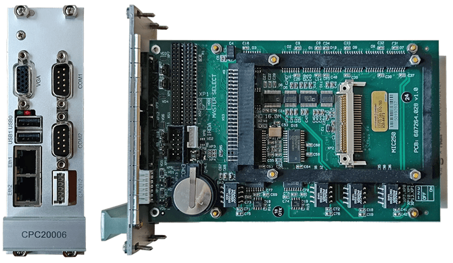
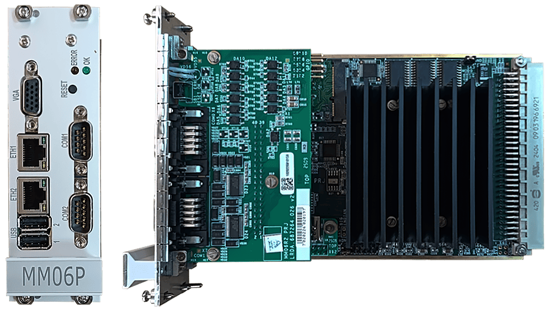

Замена Процессорного модуля
Процессорный модуль (CPC20006)

Процессорный модуль (MM06P)

На новом процессорном модуле версия программы не должна быть ниже той версии, которая была на неисправном модуле. Версию ПО можно посмотреть по кнопке «Shift+9» (CPC20006), расположенной в нижнем правом углу интерфейса программы, или в правом верхнем углу интерфейса программы (MM06P).
Замена неисправного процессорного модуля (СРС20006 или MM06P) производится при выключенном питании микропроцессорного блока (БМ) «Основного» или «Резервного» комплекта, т.е того комплекта, где находится неисправный модуль.
Отключение питания осуществляется на модуле источника питания (МИП) «Основного» или «Резервного» комплекта.
Порядок замены процессорного модуля:
- Отключить питание на МИП и вытащить с лицевой панели процессорного модуля все соединительные кабели.
- Открутить фиксирующие процессорный модуль винты и извлечь модуль из БМ.
- Вставить исправный процессорный модуль в БМ и зафиксировать его винтами.
- Вставить все соединительные кабели в разъёмы процессорного модуля.
- Включить питание на МИП.